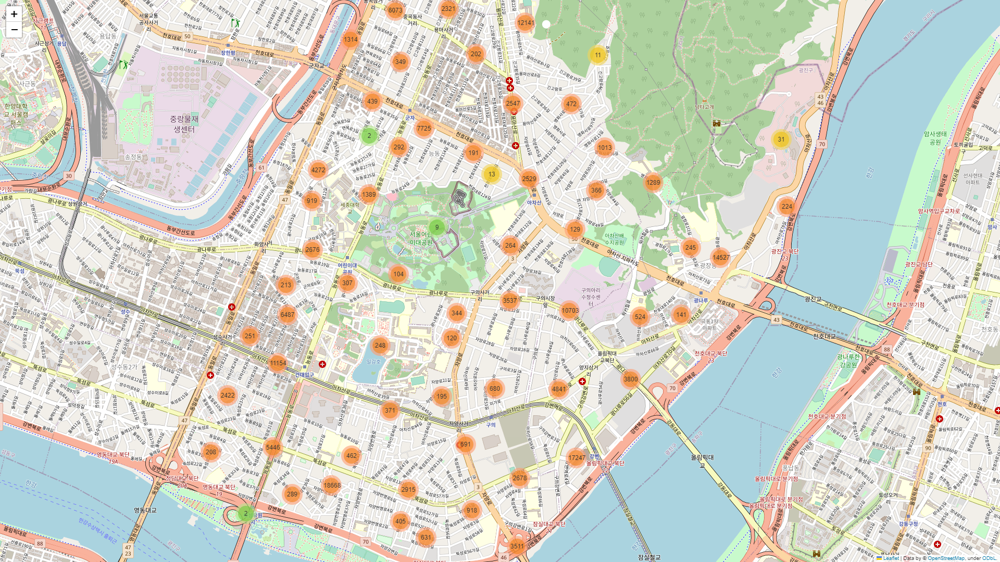
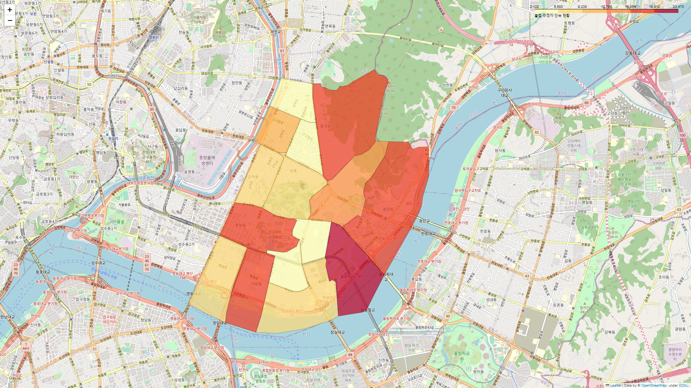
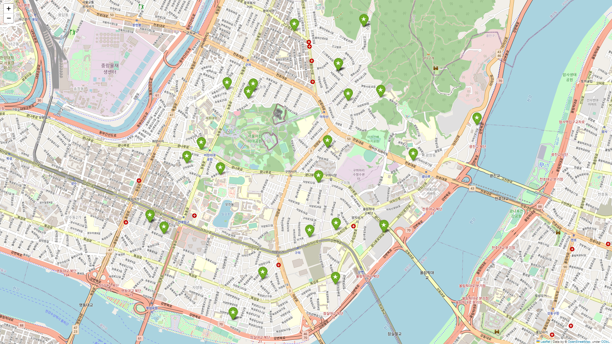
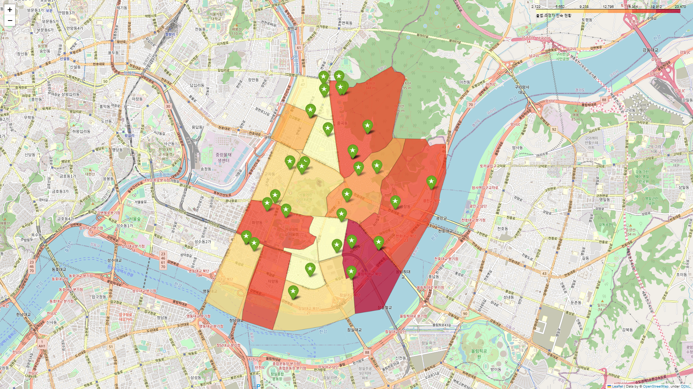

광진구 빅데이터 분석 공모전 자료
- 복소수 팀 -
광진구 불법 주정차 단속 데이터 및 공영주차장 위치 데이터 분석

불법 주정차 단속 위치
총 171,467개의 데이터 중 주소 식별이 가능한 169,436개의 데이터 전체 표시
데이터 양이 많아 페이지 로딩에 30초 이상 소모됩니다

동별 불법 주정차 단속 현황
광진구 각 동의 불법 주정차 단속 현황을 색상으로 표시

광진구 내 공영주차장 위치
광진구내 35개의 공영 주차장에 대하여 위치 표시 (거주자 우선주차 포함)

동별 불법 주정차 단속 현황 + 공영주차장 위치
동별 불법 주정차 단속 현황 데이터와 공영주차장 데이터를 하나의 지도에 표시